AI Academy · Level 2 · Grade 7 · Week 17 · Student lesson
Noise and Outliers
Learn to understand, design, build, test and explain AI systems responsibly.
Project: Transparent Book Recommender
Before you start
Week 7: inspect types, units and source records.
Plan time to read, investigate and explain. Keep predictions separate from observations.
Student lesson · 1 of 16
Your mission
Your learning target
I can calculate mean and median.
I can investigate an unusual value before deleting it.
I can explain how a summary can hide variation.
Remember before reading
Close your notes first. A rough first answer helps us choose the right starting point; it is not a score for your ability.
Without opening the old lesson, explain one key idea from Overfitting Intuition. Give an example and a mistake that the idea helps you avoid.
Without opening the old lesson, explain one key idea from Decision Trees. Give an example and a mistake that the idea helps you avoid.
Without opening the old lesson, explain one key idea from Training and Testing. Give an example and a mistake that the idea helps you avoid.
After trying, check the relevant lesson or ask your teacher. Change the part of your explanation that the evidence shows was wrong.
Week 17: Noise and Outliers
Mistakes and unusual values should be investigated, not automatically erased.
THINKER MISSION
Decide whether four odd records are errors or real cases.
Thinker name and date:
Readiness for the connected explanation
What is the total of 2, 3 and 4?
This week’s end goal
By the end, I can calculate mean and median and investigate an unusual value before changing it.
Student lesson · 2 of 16
Notice the evidence
PICTURE STORY
Notice → Predict → Explain
Begin with visible evidence. Do not explain more than the picture and information support.
MYSTERY
The learners must use noise and outliers to solve a problem. What information do they have? What decision or calculation do they make? What would count as evidence that it worked?
Three observations (what you can point to):
My prediction and the clue supporting it:
A closer explanation
Five fictional activity durations are 2, 3, 3, 4 and 18 minutes. Most are near 3, but one is much longer. Different summaries reveal different aspects. Keep all values while investigating whether 18 is a genuine long activity or a recording error.
Student lesson · 3 of 16
See how it works
VISUAL MECHANISM
Input → Process → Output
Trace the information. At each stage, ask what changed and how you could test it.
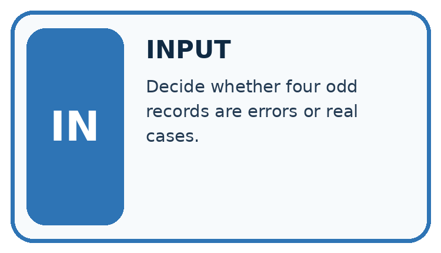
↓
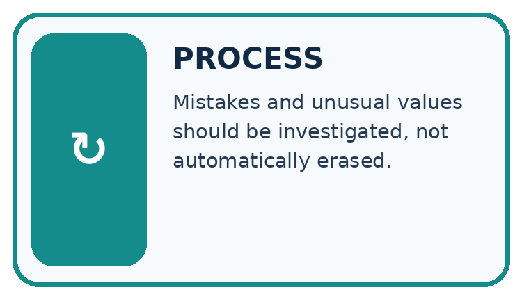
↓
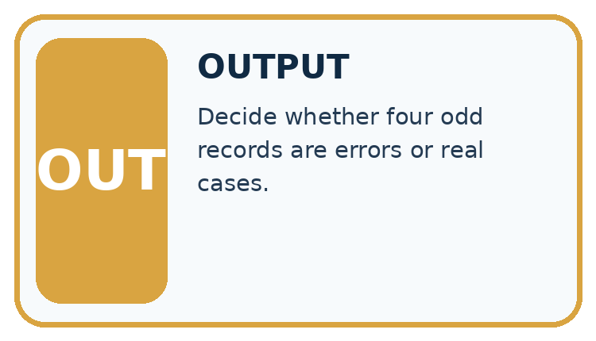
Which stage could fail even when the other two are correct? Explain:
A closer explanation
values = [2, 3, 3, 4, 18]
ordered = sorted(values)
mean = sum(values) / len(values)
median = ordered[len(ordered) // 2]
print(mean)
print(median)Follow the evidence
The script prints 6.0 and 3. sorted returns a sorted list without changing the original. This median expression works for a nonempty odd-length list only. For four sorted values, average the second and third. Do not use this odd-length shortcut for every dataset.
Use two summaries for two questions
The mean shares the total equally: 2 + 3 + 3 + 4 + 18 is 30, and 30 divided by five is 6. The median asks for the middle value after sorting: the third value is 3. The long duration 18 pulls the mean upwards but leaves the middle value at 3. A difference between the summaries is a clue to inspect the data, not permission to remove the inconvenient value.
Connect the picture and the explanation
Point to the input, the deciding step and the result in this week’s visual. Explain the same step in ordinary words. A picture helps when you can say what each part represents.
Student lesson · 4 of 16
Compare the cases
CASE GALLERY
Four Tests, Four Kinds of Evidence
A system is not understood until it survives more than one comfortable example.


NORMAL CASE: predict and name evidence. BOUNDARY CASE: predict and name evidence.


MISSING INFORMATION: predict and name evidence. TRANSFER CASE: predict and name evidence.
Which case is most likely to reveal a hidden assumption? Why?
Change one thing in the pictured case
Change: An authorised log confirms 18 was a transcription error for 3.
Prediction: Corrected mean is 3 minutes and median is 3.
Reason: Values become 2,3,3,4,3 with sum 15; sorted middle remains 3.
Student lesson · 5 of 16
Words that unlock the idea
VOCABULARY LAB
Words You Can Use to Reason
A definition matters when you can recognize the idea, use it, and contrast it with a near-miss.
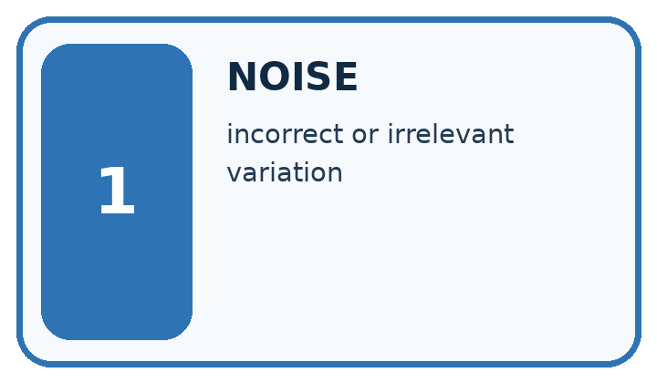
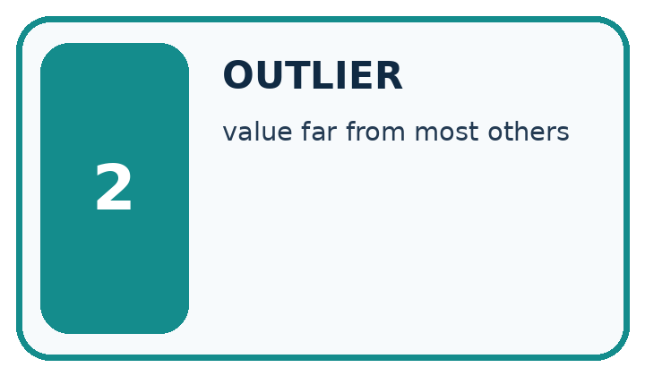
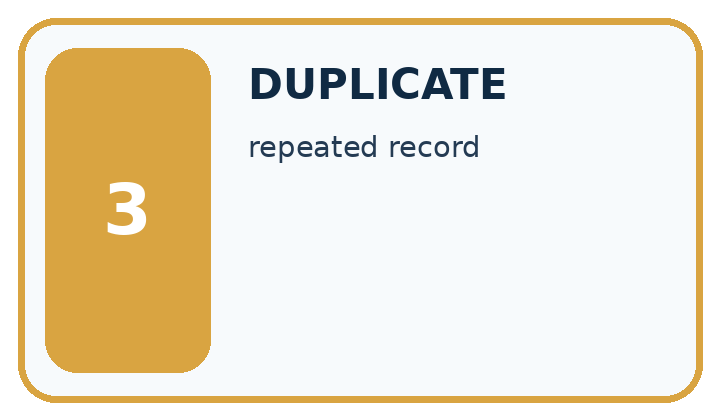
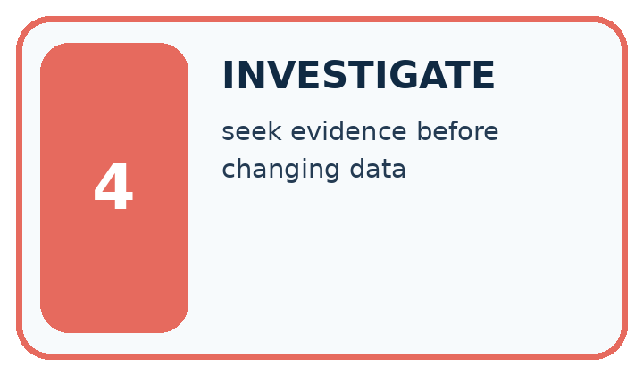
| Word | My own example | Not this / boundary |
|---|---|---|
| noise | Variation or interference that obscures the information relevant to a task. | |
| outlier | An observation far from a typical pattern under a stated comparison; it is not automatically an error. | |
| duplicate | A repeated record or copy; copies are not independent new observations. | |
| investigate | Collect and examine evidence to answer a question rather than assuming a cause. |
Words used in the closer explanation
| Word | Meaning |
|---|---|
| Mean | Sum of numeric values divided by their count |
| Median | The middle of sorted values or mean of the two middle values |
| Unusual value | A value far from most others in a dataset |
| Variation | Differences among recorded values |
Student lesson · 6 of 16
Follow a worked example
WORKED EVIDENCE
Reason Step by Step
Predict first. Then check each step. A correct answer without visible reasoning is incomplete evidence.
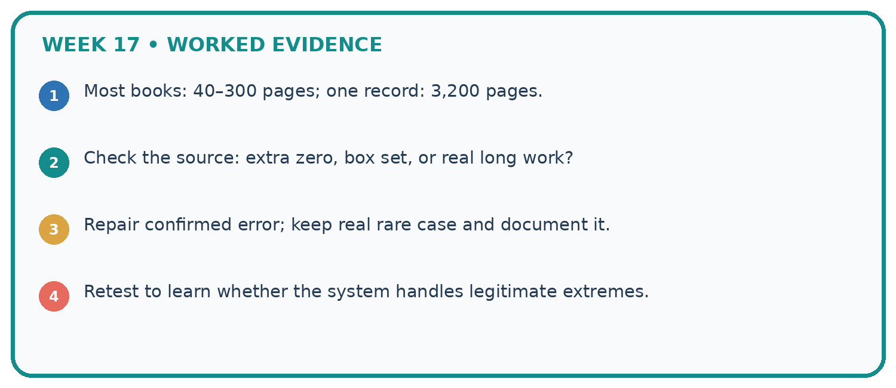
1. Most books: 40–300 pages; one record: 3,200 pages.
2. Check the source: extra zero, box set, or real long work?
3. Repair confirmed error; keep real rare case and document it.
4. Retest to learn whether the system handles legitimate extremes.
Recalculate, retrace, or restate the reasoning in your own representation:
CHECK Did the evidence answer the exact question? Did the total, path, or source record stay consistent?
A closer explanation
Learn from the worked case
Cover the result before checking it. Say what is given, choose the procedure, and follow one step at a time. Then uncover the result and explain your first mismatch. Ask why a step is allowed, not only what number it produces.
A pictorial worked case: Noise and Outliers
A fictional library records five book-processing times in minutes.
The facts we will use
Sorted times: 2,3,3,4,18.
All are recorded measurements; no evidence yet shows 18 is a mistake.
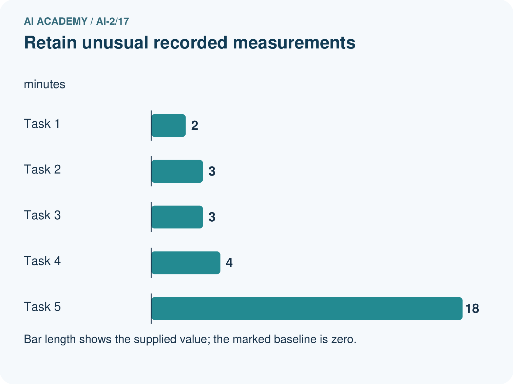
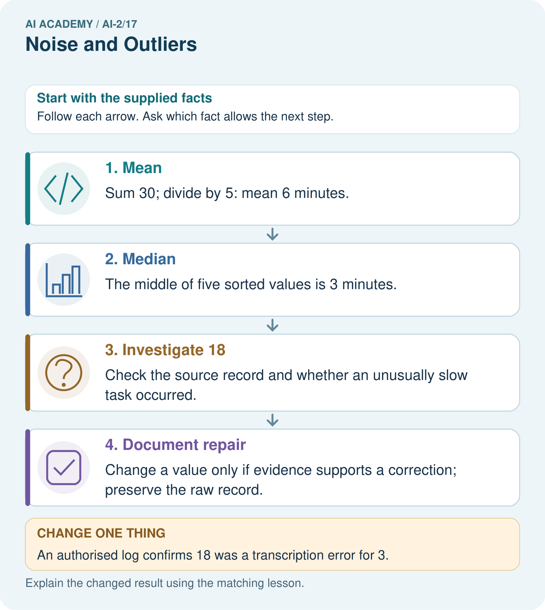
Read the picture one step at a time
Why this result follows
The mean uses every value and is pulled upward by 18. The median identifies the middle recorded time and stays at 3. Neither statistic declares the unusual observation invalid. Deleting it simply because it changes the mean would hide potentially real slow work and change the question being answered.
What this example does not establish
Five task times do not estimate all library processing times reliably or prove which summary suits every decision.
Read the labelled picture: If 18 was genuine, which summary better describes the middle observed task, and what extra fact should be shown?
Change one thing: An authorised log confirms 18 was a transcription error for 3. Predict the result before checking the explanation. What remains the same?
Student lesson · 7 of 16
Find and repair a mistake
ERROR DETECTIVE
Compare → Diagnose → Repair
Do not patch the answer. Find the earliest unsupported assumption, wrong step, or weak evidence.
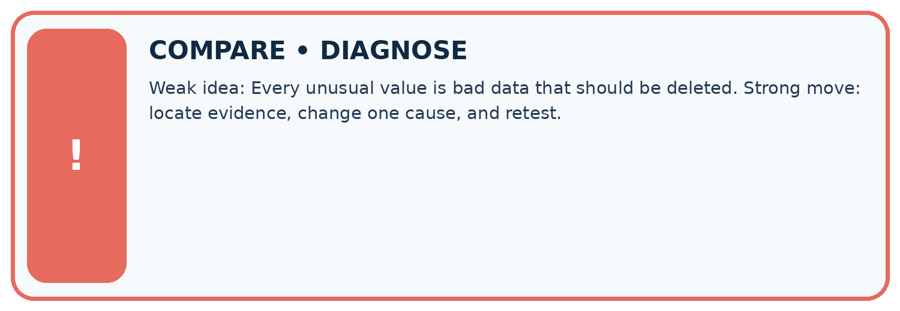
| Evidence record | Expected | Actual | Likely cause / next test |
|---|---|---|---|
| normal case | works | ||
| boundary case | stated rule | ||
| missing input | safe response | ||
| fresh transfer | generalizes |
Repair one cause. Why is this repair better than changing several things?
A closer explanation
Removing 18 merely because it raises the mean would hide evidence. Check collection notes, keep an audit trail and compare summaries with and without it only with a clear explanation.
Student lesson · 8 of 16
Practise together
LOGIC STUDIO
Trace Before You Run
Block code, pseudocode, tables, and diagrams are different ways to expose the same reasoning.

SET evidence_record PREDICT expected_result RUN one normal case and one boundary case COMPARE actual_result with expected_result IF different: locate first cause; change one factor; RETEST EXPLAIN result, limitation, and next safe step
Trace one input. Which line changes the state or chooses a path?
A closer explanation
Taking the middle item of an unsorted list can give the wrong median. For [18, 2, 4, 3, 3], the middle item is 4, but the sorted median is 3. Sort first. For an empty list, there is no mean or median under this lesson's rules.
Practise with less help: Compute two medians
Use workbook W2 for the connected example “Mean median and unusual values”. First fill the input and rule boxes. Try the middle steps before asking for a hint. After a hint, try the next step yourself.
| Plan | Do | Check |
|---|---|---|
| What is given? Which rule or procedure applies? | Record each intermediate step. | Does the result follow? What remains unknown? |
Explain your trace to a partner. Your partner points to one step to check. Swap roles on the next case. Each person writes their own explanation.
Check your reasoning
Use the worked case for Mean median and unusual values. Proposed explanation: “A successful run proves the conclusion”. Decide whether this explanation is supported. Point to the step or supplied fact that decides; explain your repair if needed.
Answer on your own before discussion. If you are unsure, say which step you need help with.
Explain the picture
If 18 was genuine, which summary better describes the middle observed task, and what extra fact should be shown?
This is supported practice. Keep the separately named independent case for an attempt before feedback.
Student lesson · 9 of 16
Run the investigation
EVIDENCE LAB
Predict → Test → Record → Explain
Keep expected and actual results separate. Surprises are useful data when recorded honestly.
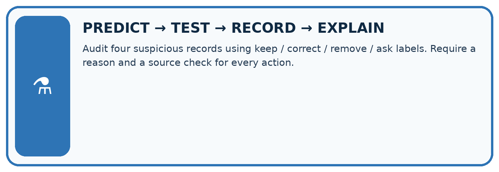
Audit four suspicious records using keep / correct / remove / ask labels. Require a reason and a source check for every action.
| Test / input | Prediction | Actual | Evidence / calculation | Change or keep? |
|---|---|---|---|---|
| normal | ||||
| boundary | ||||
| missing | ||||
| fresh transfer |
What did the hardest test teach you that the normal test did not?
Plan → try → check
Before trying: what do I expect, and why? While trying: which step could first go wrong? Afterwards: what did I actually observe, and what should change? Keep “not run” if you only traced the procedure.
Student lesson · 10 of 16
Build your understanding
MASTERY
From Knowing the Word to Owning the Idea
Move upward only when you can produce evidence without copying the worked example.

1 • NAME: Define the concept without repeating the textbook.
2 • TRACE: Show the information, state, branch, calculation, or evidence path.
3 • APPLY: Solve a different example independently.
4 • CHALLENGE: Find a boundary case, counterexample, or unfair outcome.
5 • EXPLAIN LIMITS: Say when the result should not be trusted or used alone.
My strongest evidence of independent understanding:
Student lesson · 11 of 16
Connect your project
CUMULATIVE PROJECT
Transparent Book Recommender
Every week adds one inspectable piece. The system must show how it reached a result.
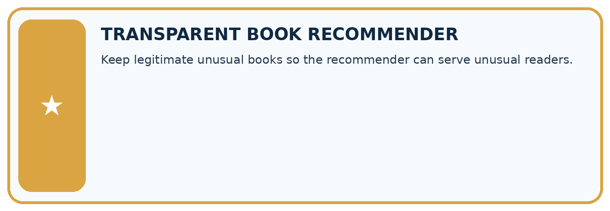
THIS WEEK’S CHECKPOINT Keep legitimate unusual books so the recommender can serve unusual readers.
SYSTEM MAP Reader need → allowed inputs → transparent rule or score → ranked candidates → explanation → test record → human decision
What will you add, change, or verify in the project this week?
What should remain under human control?
RESPONSIBLE DESIGN Collect only necessary information. Show uncertainty and limits. Never confuse a ranking with a fact about a person.
Evidence for your project
Investigate unusual recommender features and show evidence-backed repairs instead of removing inconvenient records.
Student lesson · 12 of 16
Show what you know
INDEPENDENT MASTERY PROOF
Explain • Transfer • Test • Defend
Complete this page without copying the worked example. Your reasoning matters more than decoration.
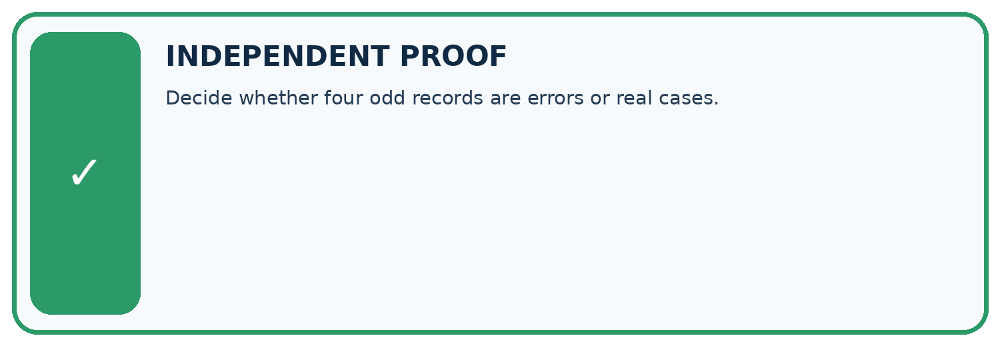
CHALLENGE Decide whether four odd records are errors or real cases.
1. My fresh example, trace, calculation, or design:
2. My evidence that it works (include a boundary or missing-data case):
3. One limitation, fairness concern, or situation needing human review:
SELF-CHECK □ I explained the mechanism □ I used evidence □ I tested a fresh case □ I named a limitation □ I can answer ‘why?’
Student lesson · 13 of 16
Study a complete case
Week 17 Worked case
Use the supplied details to practise the weekly concept before attempting the independent question. This case extends the illustrated lesson.
The situation
Recorded lengths are 90,95,100,105,900 pages.
The question
Is 900 automatically wrong?
Worked explanation
No. It is an outlier, but may be a real large book. Check catalogue, units and entry process.
Explain it in your own words
Which detail supports the answer, and why does it matter?
Trace the supplied case visually
An outlier needs investigation
| Evidence or stage | Value or result |
|---|---|
| Book A | 90 |
| Book B | 95 |
| Book C | 100 |
| Book D | 105 |
| Book E | 900 |
Recorded lengths are 90,95,100,105,900 pages.
Is 900 automatically wrong?
No. It is an outlier, but may be a real large book. Check catalogue, units and entry process.
Student lesson · 14 of 16
Try a new case independently
Independent case: Compare summaries independently
For 1, 2, 2, 3 and 12, calculate mean and median. Then replace 12 with 2 and recalculate. Explain the change.
Attempt this case before feedback. Record any help. Earlier examples below are further practice; a case already practised with feedback cannot establish fresh transfer.
Week 17 Independent application
Close the worked explanation. Apply the idea to this different question without copying.
Page counts are 40, 42, 43 and 900. Should 900 be deleted immediately? Give two explanations to investigate.
My answer, with a trace, calculation or supporting evidence
Create and test
Change one relevant detail. Predict the result before testing. Include a boundary or missing-information case when it helps reveal a limit.
My changed input and expected result
Connect to your project
Keep legitimate unusual books so the recommender can serve unusual readers.
The evidence I will keep
Your teacher has the independent answer and scoring criteria. Complete the matching workbook week to keep your practice evidence together.
Transfer practice from the original programme
Page counts are 72,80,96,960. The last book may be an anthology. Should a cleaning script delete it automatically? Give a defensible investigation and document the outcome.
Use feedback to improve
Attempt the independent case before hints. Record whether you worked alone, used a hint or followed a model. After feedback, fix the first unsupported step and explain why it changed. A later check uses a changed case, not a copied answer.
Student lesson · 15 of 16
Your lesson route
Start with this question: A fictional library records five book-processing times in minutes.
| By the end, I can | How I will show it |
|---|---|
| Calculate mean and median | Explain the deciding step, show a trace or test, and state one limit. |
| Investigate an unusual value before deleting it | Explain the deciding step, show a trace or test, and state one limit. |
| Explain how a summary can hide variation | Explain the deciding step, show a trace or test, and state one limit. |
Remember → watch and explain → try with help → investigate → try independently → keep project evidence. Your teacher may spread this lesson across several classes.
Keep your first prediction. Compare it with what the evidence shows and explain any change.
Student lesson · 16 of 16
Finish and return
Close your notes. Explain this goal in your own words: Calculate mean and median
If you are unsure, return to the worked picture and explain one arrow. If you are ready, change an input or assumption and justify your prediction.
Save your workbook evidence. At the next review, try a different case before opening your old answer.